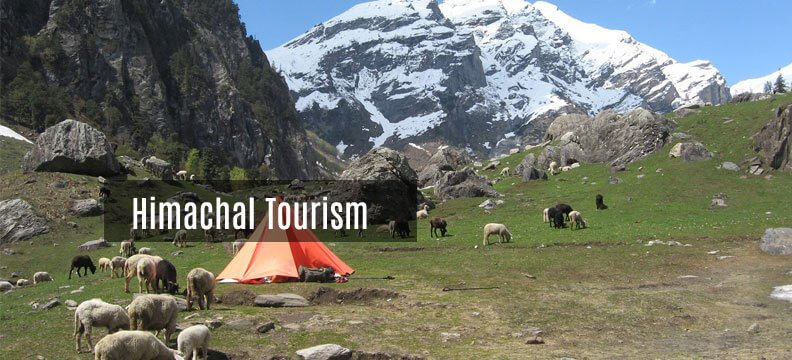

Himachal Tourism
History : Till 19th century, Tourism in Himachal Pradesh was restricted only to a limited movement of pilgrims to a few spiritual destinations in around the hills. Only when the British established their chain of hill stations did tourism receive recognition in the State. Tourism activity received a shot in the arm when British declared Shimla “The Summer Capital of India” in 1864. Post independence, more investment in the infrastructure sector led to opening up of Tourism in the State. However the biggest boost to tourism occurred in the mid 80s and 90s.
While traditionally Himachal was known as a summer destination, the Department of Tourism & Civil Aviation has taken special efforts to break the seasonality factor and has developed diversified tourism products to attract tourists in other seasons too. Now Himachal is known as “A Destination for All Seasons and All Reasons”. In fact, the Department has laid a special emphasis on the development of activity-based tourism and opening up of new sub destinations. To promote tourism in the countryside and to unexplored areas, appropriate infrastructure is being developed within available resources. By focussing on quality tourists, the Department aims at promoting sustainable tourism and encouraging private sector to develop tourism related infrastructure in the State without disturbing the existing ecology and environment.